Amimachi, Ibaraki: things to do, food and stays
Amimachi · Ibaraki
Amimachi
Highlighted on the Ibaraki map.
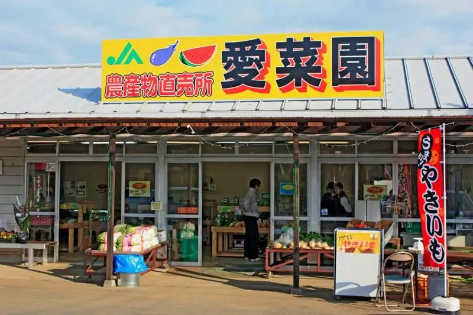
Stay
コンフォートイン土浦阿見

Konfotoin Tsuchiura Ami
Inn in Saigo, Amimachi with parking.
ＨＯＴＥＬ Ｒ９ Ｔｈｅ Ｙａｒｄ 阿見
HOTEL R9 The Yard Ami
Dining
福寿苑 実穀店
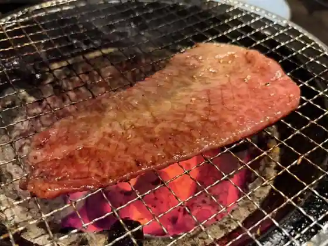
Fukuju En Mi Koku
茨城豚そば特龍 本店
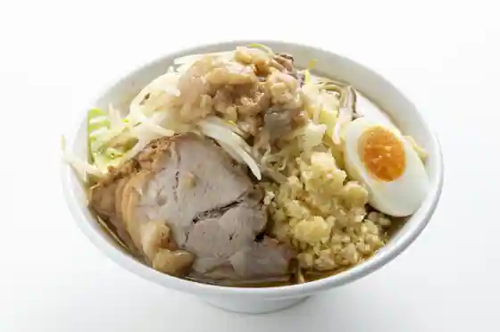
Ibaraki Buta Soba Toku Ryu Hon
らくだ食堂
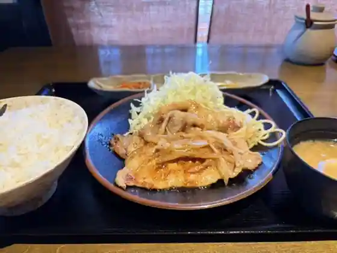
Rakuda Shokudo
CHINESE 青菜 あみプレミアムアウトレット店
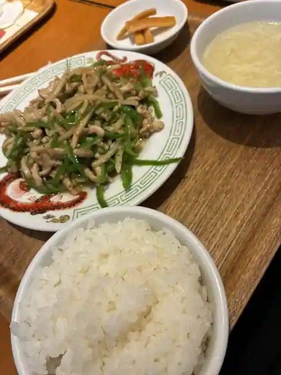
CHINESE Aona Ami Puremiamuautoretto
信太の里
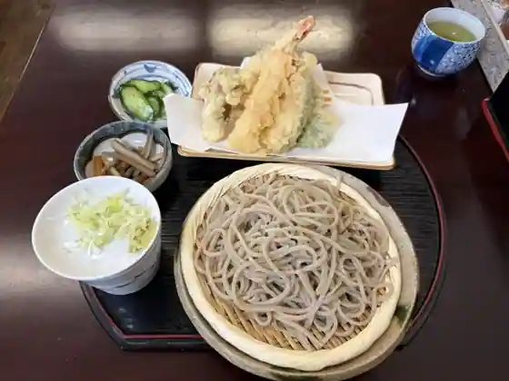
Shida No Sato
sois
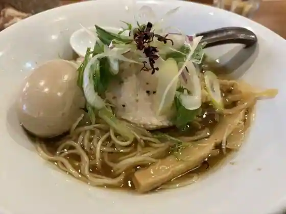
sois
四川亭
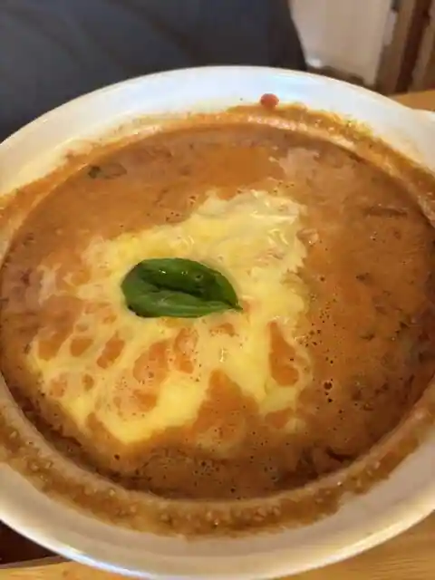
Shisen Tei
かつ吉 阿見店
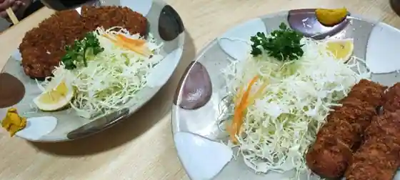
Katsu Kichi Ami
味わいそば 大名
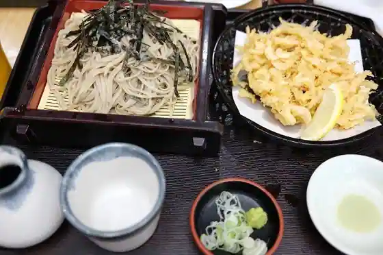
Ajiwa Isoba Daimyo
阿見ゴルフクラブ レストラン
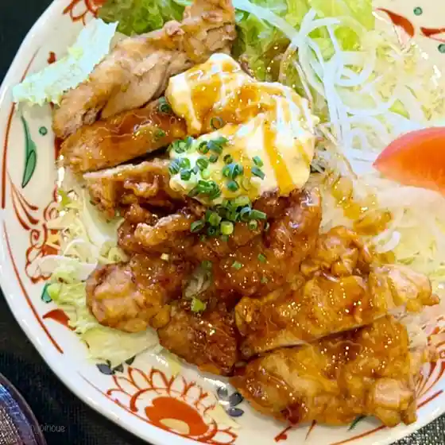
Ami Gorufukurabu Restaurant
かね喜 あみプレミアムアウトレット店
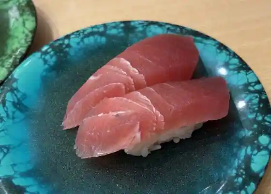
Kane Ki Ami Puremiamuautoretto
中華そば かもまる
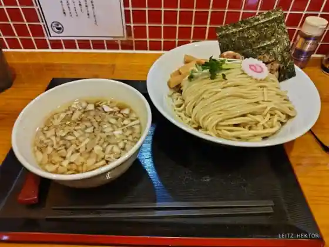
Chuka Soba Kamomaru
麺屋 黒源
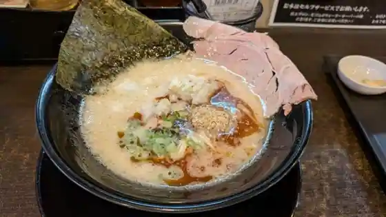
Men Ya Kuro Gen
土浦冷蔵
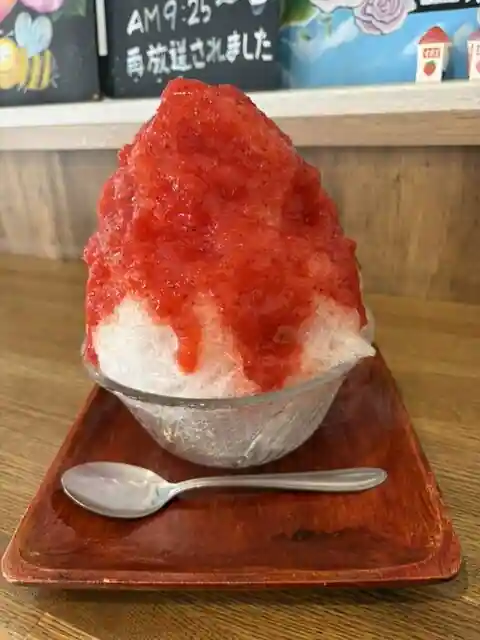
Tsuchiura Reizo
天海
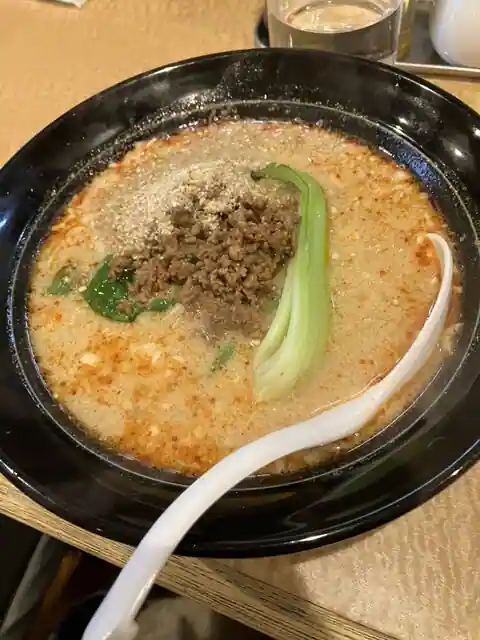
Amagai
エノテカ ドォーロ プレミオ
Enoteka Dooro Puremio
回転寿司 かね喜 阿見店
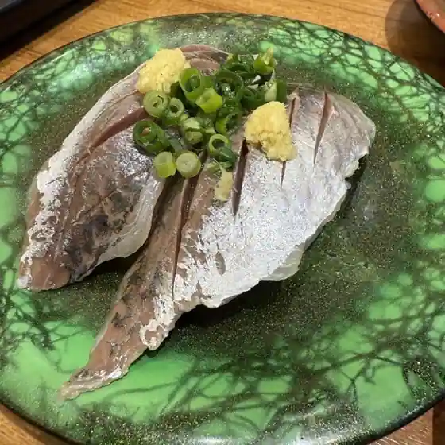
Kaitenzushi Kane Ki Ami
さくら氷菓店
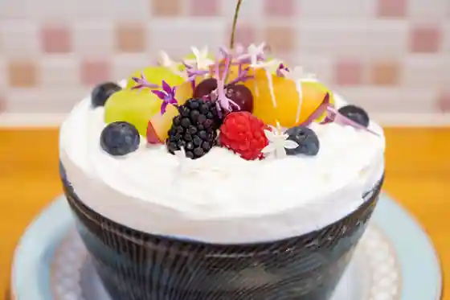
Sakura Hyoka
シギリヤ
Shigiriya
ヴィーディーズキッチン
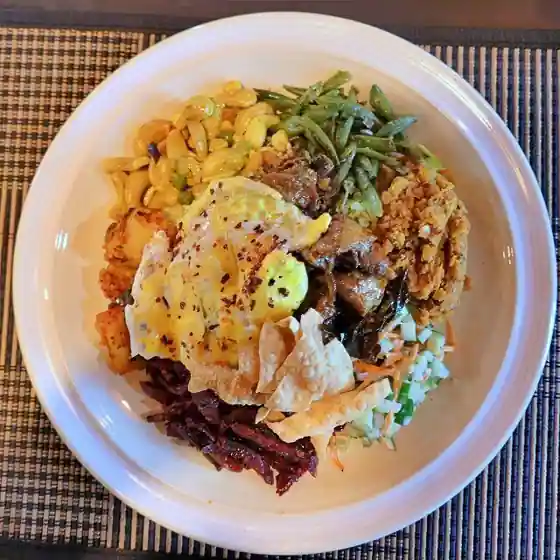
Vidizu Kitchen
なまら
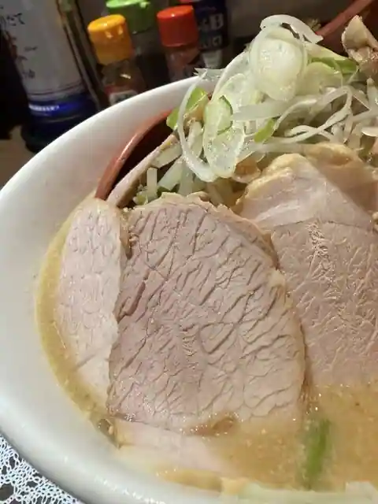
Namara
イーグルポイントゴルフクラブレストラン
Igurupointogorufukurabu Restaurant
アールティ あみプレミアムアウトレット店
Arutei Ami Puremiamuautoretto
しのぶあん
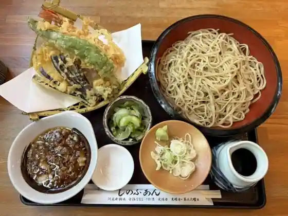
Shinobuan
Sights
Ami Puremiamu Autoretto
Chisan'in Tsuchiura Amimachi
Yoka Ren Memorial Museum (Osu Sho Kan)
Yoka Ren Heiwa Memorial Museum
Buruberii Miyamoto
Fureai Forest
JA Ibaraki Kasumi Nosambutsu Chokubai Tokoro (Aina Sono)
Noguchi Ichigo Sono
nello Cafe&DogRun